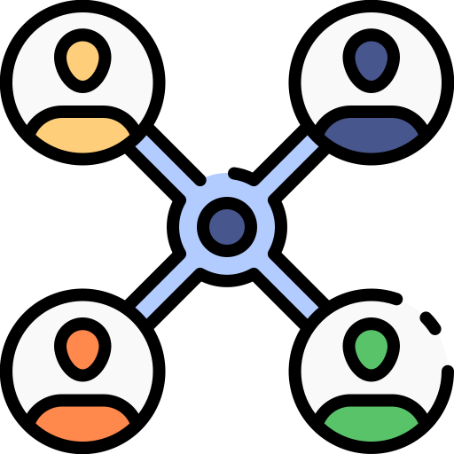
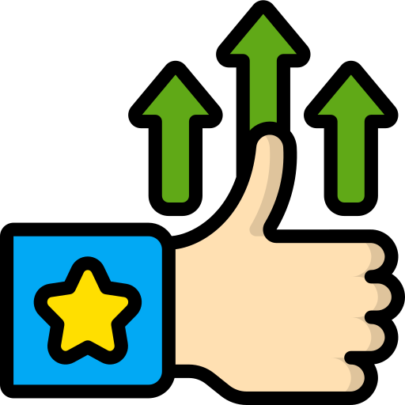
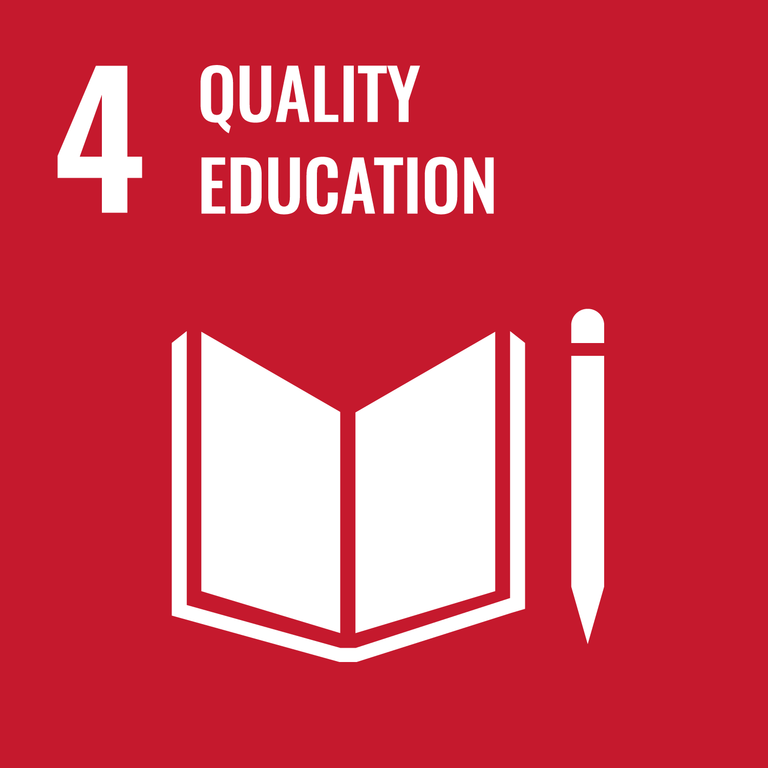
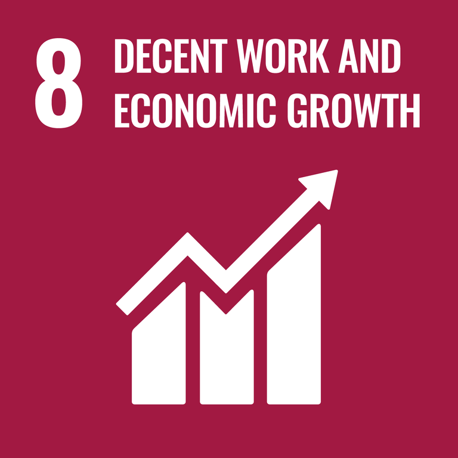
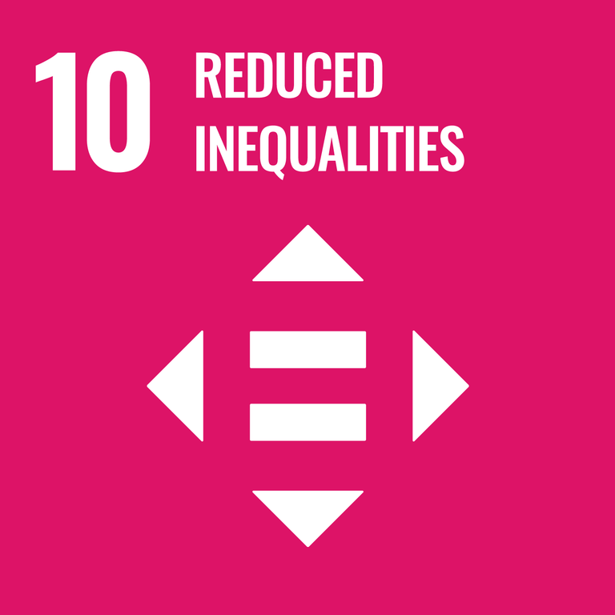
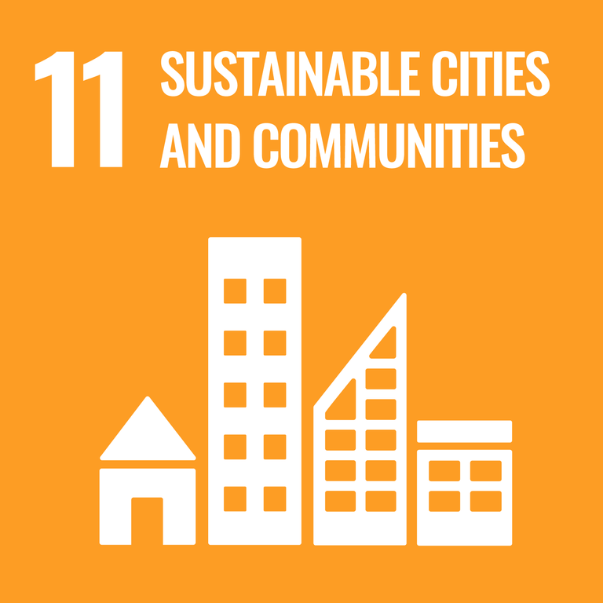
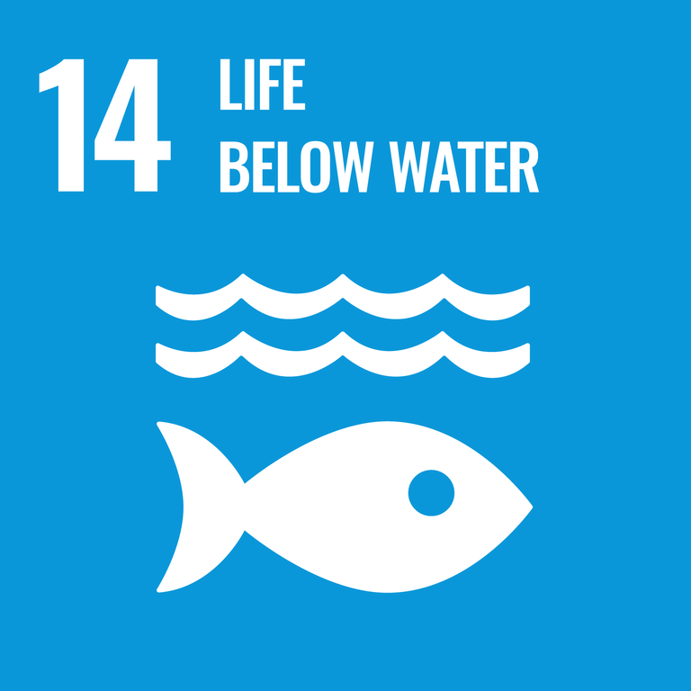
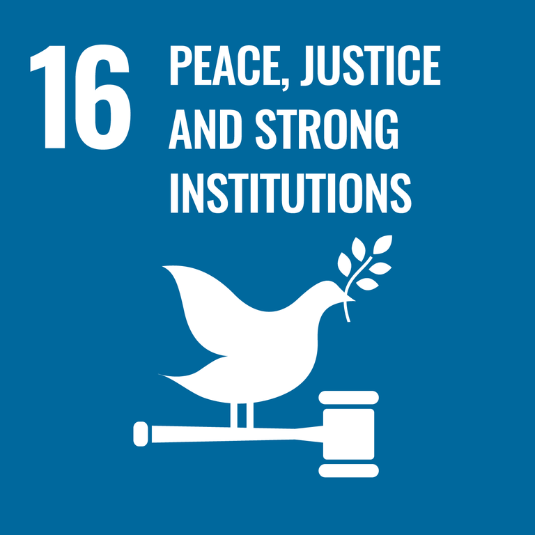
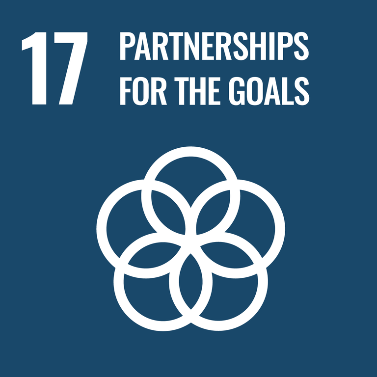

HOME > ESG 경영 > 사회공헌
사회공헌
사회공헌 전략방법
-

- 네트워크
network - 네트워크 역량의 공적 활용 노력으로 사회발전에 기여
- 네트워크
-

- 신뢰
trust - 신뢰, 편안, 안정 등 일상의 특별한 심리적 가치 제공
- 신뢰
-

- 비즈니스
business - 지역사회 및 소외계층과 함께 성장하고 발전하는 비즈니스 추구
- 비즈니스
사회공헌 목표
BGF의 네트워크 역량과 사회적 이슈를
조화롭게 연결해 모두에게 이로운 정서적 · 경제적 가치를 창출한다
중점영역
-
01
- 인프라 · 시스템의 공익적 공유
- 재난 예방 및 구호 'BGF브릿지'
- 사랑의 동전 모으기
- 미아예방 플랫폼 '아이CU'
-
02
- 함께 만드는 사회경제적 가치
- 취약계층 자립지원 'CU새싹가게'
- 노인일자리 지원 '시니어스태프'
- 발달장애인 고용 'CU투게더'
-
03
- 자발적 참여로 나눔 기부
- 청각장애아동 지원 급여우수리
- 굿 프렌즈 자원봉사활동
-
04
- 대한민국 응원 캠페인 지원
- 독도사랑 캠페인
- 독립운동가 응원 캠페인
주요 프로그램
UN 지속가능발전목표(UN SDGs)와 BGF리테일의 사회공헌 활동은 꾸준히 지속되고 있습니다.
-

- UN 지속가능발전목표
- 4.2 남녀 영유아의 교육 접근성 보장
- BGF리테일 사회공헌 활동
- - 베트남 아동친화도서관 건립
- - 아시아 개발도상국 아동 구호 및 교육사업 지원
-

- UN 지속가능발전목표
- 8.3 소규모 사업 및 중소기업 형성과 성장을 촉진
- 8.5 양질의 일자리 창출
- BGF리테일 사회공헌 활동
- - 자활사업참여자 고용 및 창업
- - 발달장애인 채용 및 직업 교육
- - 노인 구직자 교육 및 채용 지원
-

- UN 지속가능발전목표
- 10.1 경제적 취약계층의 소득 증대 촉진
- BGF리테일 사회공헌 활동
- - 자활사업참여자 고용 및 창업
- - 발달장애인 채용 및 직업 교육
- - 노인 구직자 교육 및 채용 지원
-

- UN 지속가능발전목표
- 11.5 재해 예방 및 관리를 통한 사회적 손실 감소
- BGF리테일 사회공헌 활동
- - 재난 예방 및 구호 프로그램 운영
-

- UN 지속가능발전목표
- 12.1 폐기물 배출 최소화 및 재활용
- 12.5 재사용 통한 지속가능한 소비촉진
- 12.6 지속가능한 활동 도입 및 정보 보고
- BGF리테일 사회공헌 활동
- - 친환경 편의점 모델 개발 및 운영
- - UNGC 참여 및 이행 보고
-

- UN 지속가능발전목표
- 14.1 해양오염 예방을 통한 해양생태계 보호
- BGF리테일 사회공헌 활동
- - 해양쓰레기 수거 지원봉사활동
- - 도시숲 조성(국내)
- - 탄소상쇄 숲 조성(해외)
-

- UN 지속가능발전목표
- 15.2 조림을 통한 지속가능한 숲 관리 이행
- 15.3 사막화 방지
- BGF리테일 사회공헌 활동
- - 해양쓰레기 수거 지원봉사활동
- - 도시숲 조성(국내)
- - 탄소상쇄 숲 조성(해외)
-

- UN 지속가능발전목표
- 16.2 모든 아동에 대한 모든 종류의 폭력 종식
- BGF리테일 사회공헌 활동
- - 아동 실종 예방 캠페인 전개
- - 아동안전시민상 제도 운영
-

- UN 지속가능발전목표
- 17.16 파트너쉽 강화를 통한 개발도상국 지속 성장 기여
- BGF리테일 사회공헌 활동
- - 베트남 아동친화도서관 건립
- - 아시아 개발도상국 아동 구호 및 교육사업 지원